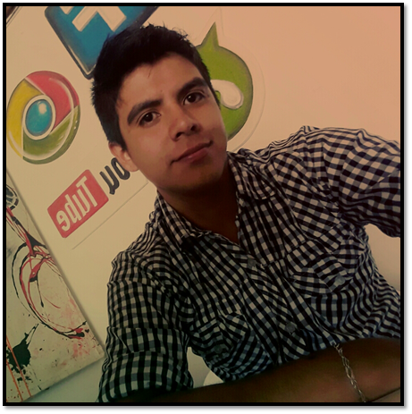
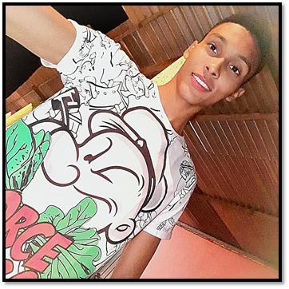
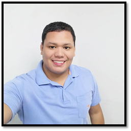

Universidad Nacional Abierta y a Distancia (UNAD)
Quienes Somos
Somos un grupo de estudiantes que pertenecen a la UNAD, y de manera virtual y con metodologias de estudio colaborativas desarrollamos diferentes actividades que forman parte de neustro proceso de formacion academica.
Yhoan Alexander Ortiz Calderon
Direccion:Pitalito Huila
Codigo: 1004266286
Carrera: Ingieneria de Sistemas
Grupo: No°56
Telefono: 320 449 3817
Correo: yaortizcal@unadvirtual.edu.co
Skype: 320 449 3827
Edward Sair Quintero Hernandez
Direccion: Cesar RinconHondo
Codigo: 1064804479
Carrera: Tecnologia en produccion de audio digital
Grupo: No°56
Telefono: 302 410 9732
Correo: quinteroedward52@gmail.com
Yosimar Enrique Pereira Acosta
Direccion:Santa marta
Codigo: 1082862502
Carrera: Ingieneria de Sistemas
Grupo: No°56
Telefono: 301 507 8563
Correo: yosimarpereiraacosta@gmail.com
Skype: Yosimar.pereira1